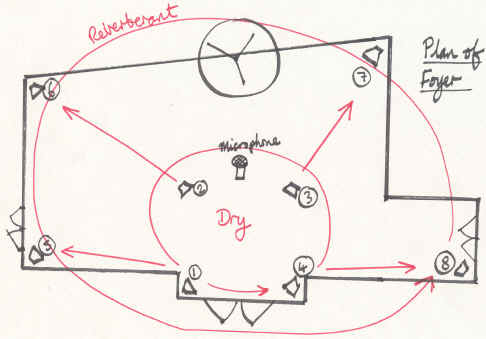
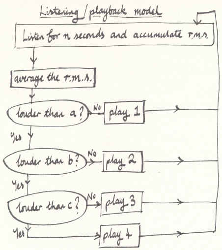
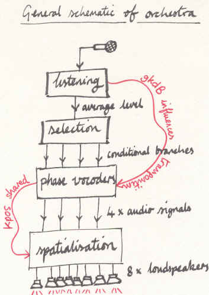
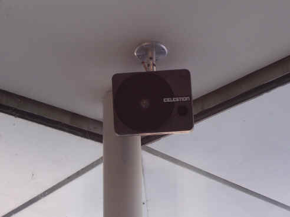
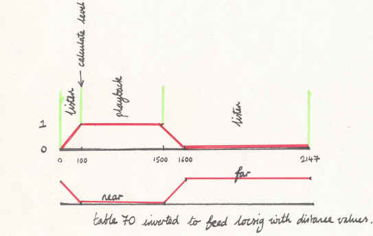

Introduction
A Place Where Light Was Silent
Thanks to a project grant from the Arts Council of Wales and the interest and support of Cardiff School of Psychology, I was able to develop a sound installation in the foyer of the school (Figure 1). The sound material used was entirely derived from speech - recordings of readings through a text based on a translation of Dante's "Inferno". The final project included visual elements in the form of books and large-scale wall hangings and the siting of the installation was over two locations: the school and the Washington Gallery, Penarth. This article covers the part of the installation located at the school and concerns itself solely with its use of Csound as the realtime sound processing toolkit. More information about the project as a whole can be found at http://marginalia.richardbowers.co.uk .
Figure 1. Entrance Hall of the School of Psychology, Cardiff University
I. A Space That Listens
One aim of this project was to develop a sound installation that was responsive to noise generated by people within the space. The noises themselves were not being used as sound sources, but were simply to act as a trigger to determine the parameters of the output from the loudspeakers. This was achieved through a listening/responding model. Listening involved detecting sound levels and responding involved taking those readings and branching conditionally to different parts of the program to make choices. In general, I wanted the quiet moments to generate, quiet, more static sounds while the noisy periods would generate active, louder sounds. The range static -> active covers the transition from near-frozen sounds (a slowly evolving spectrum) moving slowly to rapidly changing sounds which are thrown about the space more aggressively. In practice, it meant there was a simple correlation between sound activity in the foyer caused by the students and staff, and the activity coming from the loudspeakers.
Physically, the arrangement of the installation was a set of eight loudspeakers driven from eight independent channels (Figure 2). An inner quad of speakers, fixed to the ceiling, sat inside an outer quad. Additionally, a microphone attached to the centre of the ceiling was able to capture the sounds within the space in order to influence the processing of the system's audio signals. The microphone was therefore only functioning as a sound level monitor.

Figure 2. Physical Arrangement
There were two problems with this model that needed solutions:
- the output of the loudspeakers would affect the sound level readings, thereby skewing the decision-making process;
- instantaneous sound level readings alone were insufficient for the purpose of identifying a general tendency in the ambient noise.
After considering options for overcoming the first problem, including one to deduct the output signal from the input, I chose a simpler, more elegant model that enabled me also to a) solve the second problem and b) create a formal unity within the piece as follows: a cycle of listening and playback where the system would switch off playback during the listening cycle and listening would be paused during playback.
This approach raised the opportunity to isolate blocks of time in which to gather data about the sound levels in the space (Figure 3). During the listening cycle, RMS values were accumulated and then, at the start of the playback cycle, averaged to ascertain a general tendency in the ambient noise. At that moment, a conditional branch based on a set of thresholds moves execution to a part of the code to determine how playback should proceed.

Figure 3. Listening/Playback Model
The branching decides the following parameters: playback speed through a group of phase vocoder analysis files; pitch transposition of those files; amplitude.

Figure 4. Schematic of the Orchestra
II. Where Words Turn to Liquid
Playback was effected through the use of phase vocoder opcodes reading analysis files of speech recordings. These files were read at various speeds, bi-directionally, along with some pitch shifting. With the aim being to create an endlessly shifting river of speech sounds, moving between intelligibility and noise, this seemed the most directly effective, and economical, model to use. Other models were tried, including granular synthesis using banks of phonemes as sound sources. These were successful in some respects, but lacked the fluidity of transition between noise and intelligible speech that the phase vocoder handles so well. (I also considered using a mix of techniques but ultimately felt the single method gave the piece a degree of unity and robustness, aesthetically speaking).After testing some speed/transposition combinations I selected a set of four to use as choices within the conditional branching system.
The control of the pointer into the analysis files was determined, in part, by the active branch but was also influenced by a randomized system that created some movement around the general motion. That is the role of kshuffle in the following segment:
kphase phasor .1 krandh randh 1, 1, iseed krand randi 1, .1, iseed krand=abs(krand); make values positive kshuffle randi idur1*.01*kphase, 10, iseed kpos1 phasor ((krand/idur1)-abs(kshuffle)*krandh)*kspeed ...
where "kpos1" is the final pointer into the analysis file.
Unpredictable variation to the fixed transposition value was created by the continuous sound level reading from the microphone. Although this reading would be contaminated by the output from the loudspeakers it nevertheless adds unrepeatable adjustments to the transposition factor in sympathy with the general noise levels.ktransp_mobile=gktranspindex1+(gkdB*.005)
where "gkdB" is derived from the input signal.
III. Let the Internal Rhythms Translate to External Motion
One of the unifying features of the piece is the mapping of the pointer positions to the azimuth of the quadraphonic speaker arrangement. Via Locsig/Locsend pairs, the four channels of audio were fed to four speakers with their virtual positions set by scaling the kposn values by 360 to correspond to a full circle.aA1, aA2, aA3, aA4 locsig alivewA, kpos1*360, kdist, kreverbsend1
Values 90, 180 and 270 were added to the remaining three "kpos" variables respectively to space each signal around the listener.
This method reinforces my metaphor of the mobile insofar as the sounds are fixed in relation to each other in a spatial sense while there is a sense of general movement about a central point.
IV. Send its Shadow...its Reverberant Self

Figure 5. Mounted Speaker
The inner quad of speakers receives the dry signals while the outer speakers receive the output of the nreverb Opcodes. These are set to a ten second reverb time. To reinforce the impression of a cavernous space the reverb is introduced prior to and during the listening periods. This residue has less energy and therefore has less influence over the sound level readings. Also, the buffer, kpadding, is included to ensure that residual noise from the system does not influence the readings too much.
Table 70, used previously to switch between listening and playback, is now inverted and applied to the distance parameter of locsig (it is also used, via katt, to scale the input to the reverb):
kdist=((1-gkdistance)*10)+1
(+1 is added to prevent 0 which creates distortion).
This means that during the transition to listening the sound is pushed to the distance to make way for the residual reverberant signal (Figure 6).

Figure 6. Table 70 Diagram
V. Conclusion
"Part 1: How the words came into being."
The installation at the university was set in a hard, reverberant space that did not facilitate detailed positioning of sound. In retrospect, I should have produced a work that utilised the eight speakers as independent, fixed point 'voices'. The Washington Gallery site, on the other hand, was a small environment in which the visitor was completely surrounded by a backcloth of a landscape behind which the eight speakers were hidden. This was more conducive to the distribution and movement of sounds around the listener.
Note Regarding the Resources
The .csd file is available but the .pvx files were too large to upload/download conveniently. Therefore, to try the .csd out for yourself, you would need to create a set of .pvx files from mono audio files. I used whispered speech recordings of about 20-30 seconds each. Also, note that it uses eight channels but it fairly straightforward to create a two-channel version by changing the outo Opcode to outs and mixing the signals.
Acknowledgements
I would like to acknowledge the financial support from the Arts Council of Wales and the School of Psychology, Cardiff University, for technical assistance as well as sponsorship-in-kind. My thanks also go to the many individuals who helped me in various ways including lecturing and support staff at the School and Ian Watson and Aiden Taylor.The project is detailed at http://marginalia.richardbowers.co.uk .
Resources for this article can be found at http://marginalia.richardbowers.co.uk/resources.htm